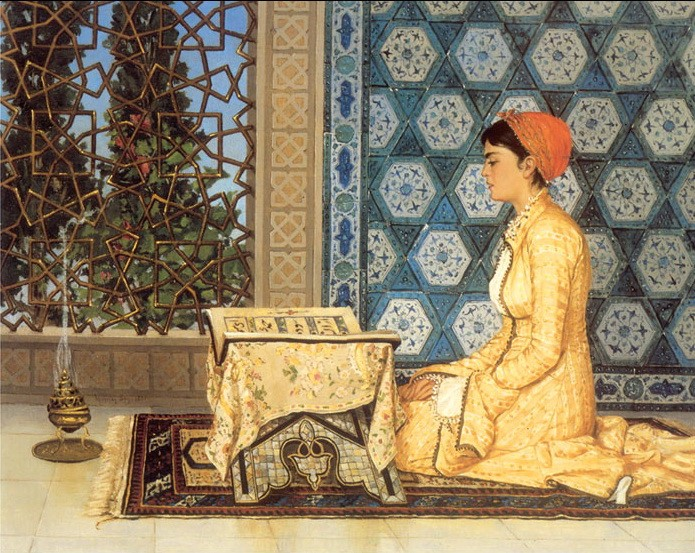

Did women actively contribute to the development of Islamic religious norms, or were they passive subjects of them?
“Girl Reciting the Qur’an” (or “Kuran Okuyan Kiz”), an 1880 painting by the Ottoman polymath Osman Hamdi Bey, whose works often showed women engaged in educational activities.Muawiyah I, the first Umayyad caliph, asked his entourage, ‘Who is the most knowledgeable of all people?’ To which they responded, ‘Prince of the Believers, it is you!’ But when the caliph pressed them for an honest response, they said, ‘If you insist – then it’s A’isha’.
How can it be that the first community outside of the early believers considered a woman to be the most knowledgeable of ‘all people’, yet there are no tafsir or fiqh books by women? This essay will argue that the structures were put in place in the Qurʼān and Hadīths to enable women to contribute through ways that were not restricted to scholarship, but these rights were not upheld in uniformity and began to diminish in later centuries. This was for a number of reasons, but primarily stemmed from patriarchal expectations distorting the envisaged nature of women’s status. This will be demonstrated in two parts. By firstly dissecting the intended legal status of women in the Qurʼān and Hadīths, this will highlight the structures that were put in place to facilitate female contribution. Secondly, by citing examples where women have contributed and others where their rights were impeded, this will underline the fact that the decline of female participation was rooted in patriarchal assumptions.
There are several factors to note before exploring these arguments. First is defining what is meant by “contribution to the development of religious norms”. Islamic religious “norms” are derived from two predetermined sources: the Qurʼān and Hadīths. The rules that they established during Muhammad’s Prophethood (610-632) were intended to be timeless, and therefore unchangeable. The crystallisation of Islamic law from the 8-10th centuries did not mean religious norms were changed or added to, as this would be innovation (bid’ah), but legal decisions were constructed in reaction to ongoing societal events using the Qurʼān and Hadīth as the framework. Therefore, to “contribute to religious norms” will be defined as having agency to participate in the shaping of these societal events, and we will see that the Qurʼān intended for women to do this in many domains. The second point to note is the overwhelming diversity of the Islamic world, as the Dar-al-Salam spread from the Arabian Peninsula to engulf regions from Southeast Asia through to the Iberian Peninsula. As it spread, existing cultural practices intermingled with Islamic laws leading to considerable heterogeneity in Muslim societies, with laws being upheld or neglected based on the society’s needs. Consequently, there were significant discrepancies between Islamic legal expectations and the realities, and women’s experiences were vastly varied. Acknowledging these factors enables us to understand that female contribution took place through a variety of ways that were not restricted to tafsir and fiqh, but due to the diversity of the Islamic world, it was difficult for these expectations to be upheld in uniformity.
Aside from the outlawing of female infanticide and prostitution, the envisaged legal status of women can be seen in five major domains: the spiritual realm, domestic sphere, marriage, financial rights, and education. Spiritual equality between men and women was firmly established as the Qurʼān revealed in Surah an-Nisa (“Women”) that both genders were created from a single soul and the best among humans were those that were most righteous (4:1). Men and women were implored above all else to believe in the Oneness of God and do good works in return of receiving the same ultimate reward and avoiding the same punishment: Paradise and Hellfire. As there was to be no distinction on the Day of Judgement based on gender but solely on deeds (49:13), the Qurʼān further stated, “The believing men and women are allies of one another…” (9:71), meaning that they were to cooperate and help each other to achieve this objective. This aim was facilitated by the gendered precept envisioned in the Qurʼān; men were to embody masculinity, and women femininity. Indeed, this does lead to the separation of social functions, but this was to achieve a complementarity of roles with males excelling in the public sphere and females dominating the domestic sphere.
Contrary to the modern stigmatism surrounding private spheres, the domestic sphere and household structure were central to Muslim’s worldly lives and to bear responsibility for it was an honourable position. This is most evident in the veneration of motherhood where in a famous hadīth, Muhammad was asked by a Companion:
“O Messenger of God! Who among the people is the most worthy of my good companionship?” The Prophet said: “Your mother. The man said, ‘Then who?' The Prophet said: Then your mother. The man further asked, ‘Then who?' The Prophet said: Then your mother. The man asked again, ‘Then who?' The Prophet said: Then your father.”
Other hadīths include, “Paradise lies at the feet of your mother”, with several more in Bukhari, Muslim, Majah, and Nasa’I. Such praise of motherhood is due to the numerous duties they have and the reward they gain from carrying it out, from the hardship of labour to suckling, nurturing, and teaching their children, as well as bearing the responsibility of preserving the Ummah’s lineage. Although the Qurʼān says, “Men are protectors of women…” (4:34), these are responsibilities that only women can do and therefore Islam recognises a matrilineal framework. “Your Lord has decreed that you worship none but Him, and do good to parents...” (17:23) The designation of equal importance to matrilineal and patrilineal patterns reflected that women could contribute to their religion through maintaining and controlling the domestic sphere, with the reward for taking care of family being equivalent to martyrdom in the battlefield.
Women’s authority to command the private sphere is further secured by their marriage rights. Marriage is considered a central institution of Islam as it aimed to achieve spiritual harmony, perpetuate human life, and reinvigorate society. The gendered responsibilities intended to complement each other to enhance a successful union, with the Qurʼān describing spouses as “garments” for each other (7:189). While the man is expected to provide financial support (nafaqa), the wife provides tamkin (sexual and emotional support). The marriage contract protects her economic, emotional, and physical well-being and she can also stipulate her own conditions. She also has the right to choose her spouse, receive a bridal gift before marriage (mahr) and a deferred gift (sadaq) after – which she retains even in the event of divorce – and on top of non-fulfilment clauses, she can initiate divorce for other reasons (khul). All these factors act as a security for the wife, strengthened her position in the relationship, and is further proof that the domestic sphere was a privileged space for women.
Outside of the domestic sphere, women were granted economic independence. “For men is a portion of what they earn, and for women is a portion of what they earn…” (4:32). Not only were women granted the right to inheritance, property, labour and wages, they also had the prerogative to buy, sell, lease, mortgage, and loan or borrow property, and set up businesses. Islamic principles of zakat encouraged women to own, invest, and distribute earnings, allowing them accumulate significant capital and be involved in various economic activities. Furthermore, these rights were unalterable by marriage and the wife could stipulate items in the marriage contract to underpin them. Women’s favourable economic position is further affirmation of the agency they were intended to have, and was another avenue in which they could contribute to their society, and by extension, their religion.
The most notable right that enabled women to contribute was their right to education. The Prophet said, “Seeking knowledge is an obligation upon every Muslim.” Both men and women were implored to seek knowledge in order to develop their intellect, therefore benefitting themselves and society. Muhammad can be seen as a proponent of female education as he taught men alongside women throughout his Prophethood, most notably in Medina where he praised the Ansari women for their desire to seek knowledge, and this is evidenced by the numerous female hadīth narrators. Knowledge of hadīth and tafsir was deemed highly commendable as understanding and transmission of it bared the responsibility of protecting the Prophet’s Sunnah and the Qurʼān itself. It was not merely meant to be acquired as capital but to be taught to benefit others, and by the time of Muhammad’s death, religious circles grew
The status of the Prophet’s wives (“Mothers of the Believers”) were elevated and were to be seen as role models for all Muslims, particularly women. A’isha stands out as the favourite wife, being unrivalled in knowledge, and for narrating 2,210 hadīths alone. Ibn Hajar al-Asqalani noted that ‘one-fourth’ of the shar’iah is based on traditions from A’isha. Her knowledge also translated into activism as she set legal and customary precedents with her narrations ranging from legal issues to ritual performances, and al-Zarkashi’s (d.769/1391) treatise reveal how she weighed in and corrected interpretations by companions. Ibn Sa’ad’s (d.222/844) Tabaqat includes a number of women’s biographical accounts among the early believers doing the same, including Umm Salama who gave legal rulings during ‘Umar and ‘Uthman’s caliphal reigns. A’isha’s political and academic prowess, her proficiency in various fields, her activism, and her role as the archetypal Muslimah reflected how women’s competence and ability to excel was recognised, and this was something to be coveted by all Muslim women.
Islam therefore granted women various avenues to contribute to both their society and religion, as they were given the right to education, inheritance, and property for the first time. They were not restricted to being wives, mothers, sisters, and daughters, but instead these titles came with rights that strengthened their position. Many women among the early believers took advantage of these liberties participating in various forms of public life, attending the mosque, studying theology, and even joining military expeditions. This was a clear contrast to the pre-Islamic Arabia, where women’s “status was low and their rights negligible”, as pointed out by Stowasser. Nabia Abbott therefore depicts Muhammad as a “reformer” who “strove successfully for the improvement of the economic and legal status of all Muslim women.” But certain Islamic legislations, such as the seclusion specifically decreed on the Prophets wives, were misconstrued and resulted in the eventual restructuring of Muslim women’s roles into “one of passivity and submissiveness”, similar to those already imposed on neighbouring Jewish and Christian women, as they slipped back into pre-Islamic customs of women being subservient to the male tribal figurehead. Although Leila Ahmed criticised Abbott’s thesis as it rested on the assumption of “misinterpretation of later generations”, this did take place at all levels as the early community turned into an empire and social attitudes merged with Islamic law, all of which was compounded by sectarian splintering in the centuries to follow as a gap emerged with Muhammad’s Sunnah.
Indeed, patriarchy, misogyny, and misinterpretation do not entirely explain the decline in female participation. Scott Meisami points out that gender roles were “social constructs and subject to change over time”, and therefore the assumption that gender is constant in any given society is “untenable”. Marion Katz adds that opposition to women’s participation also arose from “evolving internal religious, social, and political concerns”, where scholars reacted to specific circumstances. Another factor to consider is the changing of female interests, with the increase in popular worship and decrease in institutional forms of worship. Arezou Azad also highlights the Eastern Islamicate as a source of female participation was often ignored, with female Sufi mystics, dargah’s, and Shi’I centres of learning flourishing. Although true, taking into consideration the highly gendered theories of knowledge that were prevalent during this period (facilitated by the gendered precepts established within the Qurʼān) and hermeneutics being a field dominated by male scholars, it is undoubtable that patriarchal assumptions played a role in the formulation of Islamic jurisprudence and jurists decision-making. On top of the regional diversity in the application of the shari’ah – which were unfixed and fluid – the construction of the legal framework itself was also influenced by gendered theories of knowledge, as scholars’ interpretations were shaped by their patriarchal concerns.
Ruth Roded cites instances where Abbasid legists ignored Hadīths narrated by women and many other examples, but due to the breadth of the Dar-al-Salam, it is difficult to pinpoint all the deviations. Instead, it is more effective to discern the broader patriarchal assumptions scholars elicited from the Qurʼān and Hadīths. There are several notable Qurʼānic verses that are highlighted as evidence for male dominance to female subservience, such as 4:34 (which also permitted violence against wives insubordination), verses from Joseph’s Story (“Indeed it is the guile of you women…” 12:21), women’s testimony being valued less than men (2:282), and women inheriting less than men (4:11). Additionally, there were Hadīth’s noting that women made up the “majority of the Hellfire”, were deficient in “knowledge and religion”, and others stating, “…if the wife were lick his [husbands] sores, this would [still] not fulfil the rights he has over her”, which were not made canonical. Although modern scholars note the complexity of the Qurʼānic verses and the intentional exaggeration or the questionable authenticity of the Hadīths, they still reflect the gendered theories of knowledge that prevailed during this time period. This would have significant social and structural implications for women’s status.
The inherent weakness of women became a fixed attitude of medieval Islamic societies leading to the perversion of rights which they were originally entitled to. From these Hadīths and Qurʼānic verses, scholars extracted the notion that women could not become imams or judges or lead prayers, despite there being no explicit mentioning that they were unable to do so. Even in the Sahih hadīth, “A people will not succeed who are commanded by a woman,” it does not mention what they cannot command, whether it’s the caliphate or prayer. Women’s visibility in public space became a religious ideal with women’s capacity to deceive and tempt men taking precedence over their own rights, as veiling and seclusion came to be considered a means of maintaining social order. Although Ibn al-Hajj (d. 737/1336) being one scholar in one society, his efforts to enforce seclusion in Mamluk Egypt are symptomatic of a long-line of scholars that inadvertently led the exclusion of women’s presence in madrasas, mosques, intellectual spaces and in some cases, women’s right to education entirely. Women were not just ‘relegated to the private sphere’, but the intended authority they were meant to assume over the domestic sphere was distorted, and this can be seen in obtrusion of their financial independence. David Powers’ case study of 15th-century Maghrebi society captured the systematic exclusion of female inheritance across several centuries, where the Islamic science of shares (‘ilm al-faraid) were ignored and inheritance was distributed according to local customs. Powers concluded that the Berber tribesmen had only been “thinly Islamicized”, but his case study is indicative of the wider encroachment on women’s rights stemming from patriarchal assumptions. Despite Islam’s gendered expectations envisaging a complementarity of roles, misogyny was an inescapable product of patriarchy.
Nevertheless, there are many instances were women have broken through patriarchal boundaries and contributed to their religion – as was intended for them – academically, legally, economically, politically, and militarily. Nadwi enumerated 8,000 biographical accounts of female scholars, stating they “were far from mediocre, and indeed, some excelled beyond their male contemporaries.” Nadwi explains that these women did not only participate, but actively reformed their societies, saying it was “most striking… the respect and recognition they received” for their intellectual achievements. Asma Sayeed examined four muhadīthat’s from four different time periods, including Shuhda al-Katiba (482-574/1089-1178) and A’isha bint Muhammad (723-816/1323-1413), and concluded that the return to traditionalism and orthodoxy led to surges in female scholarship. Katz’ study revealed women had considerable presence in mosques despite the many attempts to curtail it, such as in Iraq and Egypt. Roofed arcades designated for women’s prayer were built in North Africa and al-Andalus, and female scholars such as Sitt al-Wuzara (d. 717/1316) taught in great mosques, where her “big lessons were attended by notable men of the city, including scholars.”
Abbasid, Mamluk, and Ottoman court records show that women were not passive agents in the development of Islamic laws, but made use of the courts appearing as plaintiffs, defendants, and witnesses. Although this was not consistent in each society, the records show women’s legal literacy, understanding of their rights, and how to assert them as many judges ruled in their favour. On top of the legal sphere, women also participated in the economy with their economic independence enabling some to accumulate considerable wealth and fund charitable endowments (Waqf). 37% of charitable endowments in 16th-century Ottoman Istanbul were founded by women, as were 25% in 18th-century Cairo and 51% in 19th-century Aleppo.
Shajarat al-Durr’s short reign is often regarded as the height of women’s political and military influence, but there was several militarily and politically active women among the earlier generations. Female warriors such as Nusaiba bint al-Mazinia fought alongside men in the Battle of ‘Uhud, with the Prophet saying, “Wherever I looked, I saw her fighting before me.” Additionally, Khawla bint al-Azar fought in the Islamic conquests and was regarded by many as the greatest female warrior in history. Just as the Qurʼān did not prevent women from participating in war, it did not forbid them from participating politically. The Qurʼān even contains an instance where a female ruler (Queen of Sheba) clearly demonstrates an ability to govern but was foiled only by her ignorance of faith (27:23). Delegations of women often presented cases to Muhammad, the most outspoken being Asma bint Yazid al-Ansari, and the Prophet admired their inquisitive attitude. There was even an instance where ‘Umar al-Khattab (second khalifa) repealed his decision restricting dowries after several women publically opposed it, showing political and religious awareness. Not only was A’isha consulted by Abu Bakr, ‘Umar, and ‘Uthman, her prestige among the companions enabled her to lead an army at the Battle of the Camel in the first fitna. Although Spellberg contests Abbott’s claim that A’isha’s loss at the battle prompted the exclusion of women from public life, stating women continued to fight in the second fitna, he does concede that the event was used as further evidence to extend and refine the idea that women were flawed and dangerous to the maintenance of order.
Consequently, patriarchal presuppositions on women’s inherent weaknesses presiding over their own rights would be a recurrent and constant theme of the Islamic world. Only now in the 20th and 21st-century is this being undone with the instruments of autonomy that Islam presents, and has always presented, being rediscovered.